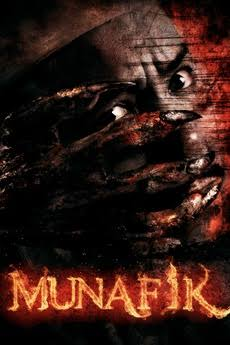

Ustaz Adam is an ustaz and Islamic medical practitioner who is blessed with an 'advantage' because every time his patients experience 'disorders', he successfully treats them according to Islamic medical methods.

SYAMSUL YUSOF
( USTAZ ADAM )

NABILA HUDA
( MARIA )

FIZZ FAIRUZ
( AZMAN )

RAZIB SALIMIN
( ZATI )

SABRINA ALI
( ZATI )

RAHIM RAZALI
( AYAH ADAM )

Munafik is the ninth film directed by Syamsul Yusof, who previously directed Evolusi KL Drift (2008), Khurafat: Perjanjian Syaitan and Aku Bukan Tomboy (2011).
The film, which cost RM1.6 million, also stars other actors such as Pekin Ibrahim, Sabrina Ali, Datuk Rahim Razali and A. Galak.

News portal Utusan Malaysia described Munafik as a film with elements of dakwah that is easy for viewers to understand because the scenes in the film are closely related to everyday life.
After four days of screening, the film managed to collect RM 2.3 million before increasing to RM 3 million on the fifth day. By its eleventh screening day, it smashed records by accumulating over RM8.5 million. Within 26 days, the film hit a legendary total collection of RM17.04 million in Malaysia alone.
The collection increased to RM 11 million after two weeks of screening. Entering the eighteenth day, the collection reached RM 12.97 million. The collection became RM17 million on the twenty-sixth day. Including international releases in Singapore and Brunei, Munafik officially grossed a massive RM19 million across its entire theatrical cycle.